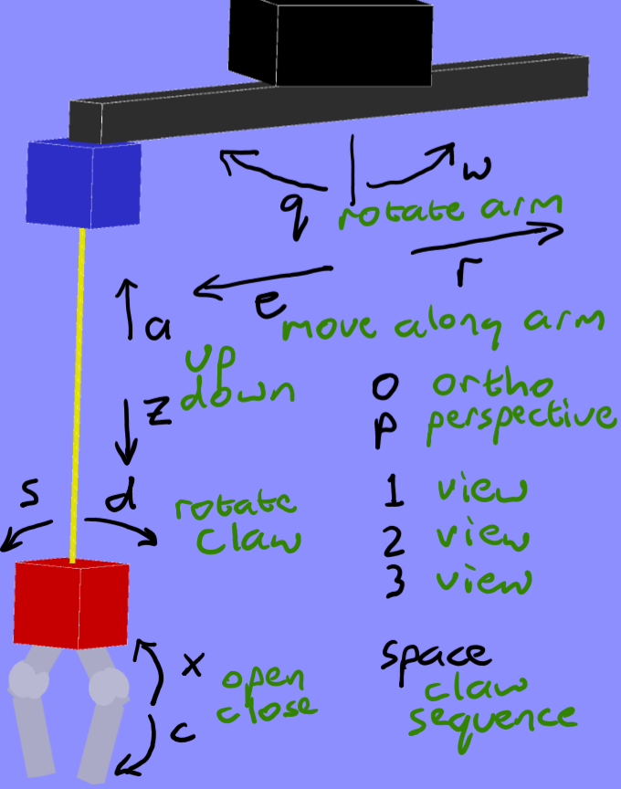

COMP 3490 Assignment 3
Material covered:
- animation techniques
- 3D transformation and viewing
- hierarchical modeling
Notes:
- For all programs, use Processing (P3D) or JOGL under Java, or another OpenGL environment with the consent of the instructor.
- Include a text
readme file that describes the platform you used to test your programs (Processing or Java version, operating system, graphics hardware), and notes to the marker for each question (e.g. things that don't work as expected or things that are better than required).
- Electronically submit a copy of your source code files in a single
.zip file.
- Use the following folder structure within your zip file:
Readme.txt
Q1/
Q1.pde (or Q1.java, and any other source code files)
Q2/
Q2.pde
- Your assignment submission must run correctly with files in that structure, and as downloaded. Do not use further subfolders (e.g. no Java packages). The marker will not reorganize or rename files to make it run.
- Name your zip file in the form
LastnameFirstnameA3.zip, replacing LastnameFirstname with your last and first names.
- The initial window size for both questions should be 640x640, and you do not need to handle window resizing.
Question 1: Elastic collisions (2D)
This question is worth 40% of the assignment mark.
Write a P3D/OpenGL program that will run an animated particle system based on 2D elastic collisions between circular objects, treated as idealized point masses. Each object has at least a position and velocity, with x and y components for both. The system will run indefinitely.
Implementation requirements:
- You may implement the physics of the system in any realistic (enough) way, but this vector solution is easy.
- The system is bounded by the edges of the window. Collision with a border is handled very simply by reversing the component of the velocity corresponding to that edge of the window.
- Some minor errors in the simulation will be tolerated but they should be infrequent.
- The system runs in real time. Update the motion based on the elapsed time each frame.
- All object sizes and masses can be the same, unless as described below.
- The number of objects, their sizes, and velocity ranges are chosen by you to make things reasonable.
- Create random initial objects within the limits you chose. Do not allow the initial objects to overlap.
- You must animate object positions PLUS ONE other parameter of your choice. Possibilities include rotation, size, colour, etc. Try not to do anything unpleasant like strobing colours, but ensure the animation is visible. Mention the parameter you choose in your notes to the marker when you hand in your assignment.
- Add AT LEAST ONE MORE feature of your choice to the system. Possibilities include limited object lifespan (which requires both birth and death, keep the number of particles close to constant), angular velocity (lots of effort but cool), collision with some other object (add a "net" that you try to redirect the particles into), interaction (clicking a particle and dragging it with the mouse will use that as its velocity, allowing you to collide it into other objects), etc. Again, describe the feature to the marker as part of your submission.
Question 2: Claw Machine (3D)
This question is worth 60% of the assignment mark.
Write a P3D/OpenGL program that will implement a simulation of a "claw" from a claw machine. The claw machine is built from simple 3D shapes like boxes and/or spheres. In this version of the machine, the crane is mounted on a rotating arm, and can move along the axis of that arm. The claw hangs from the crane on a cable, and the cable can pull the claw up and down. The claw can rotate (separately from the arm). The claw gripper can open and close.
When your simulation first starts, it should be motionless. Pressing a key as shown below will cause that motion to start. The motion will continue at the same speed until:
- a movement reaches its end (if there is one: the arm and claw can rotate indefinitely);
- the same key is pressed, which will stop the motion; or
- the key to move the part in the opposite direction is pressed, which will reverse the direction of the motion (at the same speed).
There is also a special behaviour for the space bar key. Pressing space will cause the claw gripper to open, the cable to drop the claw to its maximum extent, the claw gripper to close, and then the cable to rise back up to its minimum extent. This sequence does not need to be interruptible by any other keys.
There are also special functions for the o, p, 1, 2, and 3 keys on the keyboard:
- pressing the
o key will switch to an orthographic projection;
- pressing the
p key will switch to a perspective projection; and
- pressing the
1, 2, and 3 keys will switch between three different views of the machine. Note that all three should "work" (without visual glitches) in both projections.

At the bottom of your machine, draw a variety of 3D shapes ("prizes"). Note that you do not need to be able to manipulate these using your claw! You can place the objects out of the reach of the claw.
Some general requirements:
- You must "hand-code" the geometry for at least one primitive used in your ball machine (e.g. a pyramid, or a box with different-coloured faces). Note in your
readme file which geometry you created and where it appears in your scene.
- You may also use Processing's 3D primitives (box and sphere) as much as you like.
- Colours should be distinctive and clearly show the parts of the machine and prizes.
- Except for the
space bar claw down sequence, all motions can occur at the same time.
- All motion should be smooth: there should be no visible "jumps" in position, and movement speed should be consistent.
- The machine should be physically consistent: parts of it shouldn't unreasonably intersect with or become disconnected from other parts.
- The views you choose should show most/all of your scene in both projections.